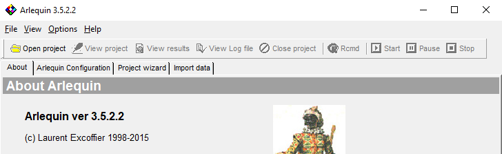

if (!requireNamespace("remotes", quietly = TRUE)){
install.packages("remotes")
}
remotes::install_github("brunomioto/nupgen")Facilitando a criação de arquivos Arlequin (.arp) com R
genetics
packages
Veja como gerar um arquivo .arp diretamente no R para o Arlequin

O problema
Este é um post bem específico, mas pode ser útil para quem realiza análises populacionais com dados genéticos. Então resolvi escrever um post simples para ajudar neste processo.
Durante minha tese, precisei realizar análises populacionais (AMOVA, FST, etc), mas eu não sou muito dessa área, então nunca havia utilizado o software Arlequin, um software bem antigo (desde 1995) mas ainda muito utilizado para trabalhos científicos.
O problema aparece quando precisamos criar um arquivo de entrada .arp para utilizar no Arlequin. Alguns programas (como o DNAsp) até salvam um arquivo .arp, mas ele não funciona muito bem e na maioria das vezes necessita de edição manual.
Tutoriais
Ao buscar por ajuda, cheguei até este tutorial completo da Natália E. de Lima.
A Natália claramente entende mais deste assunto do que eu, então edita manualmente os arquivos de dados populacionais para utilizar no Arlequin.
Como eu tenho mais facilidade com R do que genética de populações, busquei outros tutoriais, dessa vez usando o R, e cheguei neste vídeo do Josh Banta
Aqui ele ensina a transformar um arquivo FASTA em um arquivo .arp, mas também nos ajuda a adicionar grupamentos aos nossos dados. Tudo isso utilizando um script em R. Estes dados estão todos disponíveis no vídeo acima.
Uma abordagem mais simples
No entanto o script para essa tarefa é bem confuso e pode ser desafiador para quem não é muito proficiente em R. CPensando nisso, e para facilitar o trabalho de colegas no futuro (e o meu também), adaptei este código para uma função simples em R, chamada create_arlequin().
Esta função está disponível no pacote que fiz para meu laboratório, o Nupgen! Este é um pacote bem experimental e com funções extremamente específicas, então não se preocupe com essas outras.
Para instalar o pacote é bem fácil, abra o R e rode
Pronto! Agora vamos criar o arquivo .arp que precisamos. Antes de tudo, vamos carregar os pacotes que precisamos. Utilizaremos o pacote ape para importar as sequências e o nupgen para criar o arquivo.
Agora vamos carregar um alinhamento em FASTA e um arquivo de grupos. Utilizaremos aqui os arquivos de exemplo utilizados pelo Josh Banta no tutorial dele, mas você pode utilizar os seus também!
O arquivo FASTA é um alinhamento comum, com as pontas cortadas em algum software tipo MEGA, mas que seguem essa estrutura:
>C1NFaBCy
AATCATCCCCCACATAACCTCCACACTTATCACATACCTTCTAATCTTATTAGGCGTAGC
ATTCTTTACCCTTCTTGAACGCAAAGCTTTAGGGTACTTTCAAATCCGAAAAGGCCCAAA
CAAAGTTGGAATTATAGGAATCCCACAACCACTAGCAGACGCCCTAAAACTTTTTGTGAA
AGAATGAGTAATGCCCACATCTTCAAACTACTTACCATTTATTTTAACCCCAACAATCAT
ATTAATTTTAGCACTTAGACTATGACAACTATTTCCATCCTTTATACTCTCATTTCAAAT
AGCCCTAGGAATACTCTTATTCTTATGTATTTCTTCCTTAACCGTCTATACAACCTTAAT
AGCAGGTTGGGCCTCAAACTCGAAGTATGCTCTACTAGGGGCCATTCGAGCCATGGCCCA
AACCATCTCATATGAGGTAACAATAACACTAATTATCATCTTCTACCTATTCTTAATTAT
ACAAATAGACATAGTAACAATCCGCTCAGTTAACACCTCTATACCAACCTTTGCCCTCTC
CGCACCATTAGCTATTATATGGACTGTTGTCATCTTAGCAGAAACAAACCGAGCCCCATT
TGACTTT
>C2NPrBCy
AATCATCCCCCACATAACCTCCACACTTATCACATACCTTCTAATCTTATTAGGCGTAGC
ATTCTTTACCCTTCTTGAACGCAAAGCTTTAGGGTACTTTCAAATCCGAAAAGGCCCAAA
CAAAGTTGGAATTATAGGAATCCCACAACCACTAGCAGACGCCCTAAAACTTTTTGTGAA
AGAATGAGTAATGCCCACATCTTCAAACTACTTACCATTTATTTTAACCCCAACAATCAT
ATTAATTTTAGCACTTAGACTATGACAACTATTTCCATCCTTTATACTCTCATTTCAAAT
AGCCCTAGGAATACTCTTATTCTTATGTATTTCTTCCTTAACCGTCTATACAACCTTAAT
AGCAGGTTGGGCCTCAAACTCGAAGTATGCTCTACTAGGGGCCATTCGAGCCATGGCCCA
AACCATCTCATATGAGGTAACAATAACACTAATTATCATCTTCTACCTATTCTTAATTAT
ACAAATAGACATAGTAACAATCCGCTCAGTTAACACCTCTATACCAACCTTTGCCCTCTC
CGCACCATTAGCTATTATATGAACTGTTGTTATCTTAGCAGAAACAAACCGAGCCCCATT
TGACTTTEnquanto isso, o arquivo de grupos é um arquivo .csv com duas colunas, group (com o nome dos grupos) e name (com nome das sequências), seguindo este exemplo:
group,name
1,C1NFaBCy
1,C2NPrBCy
1,C3NPrBCy
1,C4NPrBCy
1,C5NPrBCy
1,C6NPrBCy
1,C7NPrBCy
1,C8NPrBCy
1,C9NPrNec
2,C10NPrNec
2,C11NPrNec
2,C12NPrNec
2,C13NPrNec
3,C14NPrSab
3,C15NPrSab Caso queira, você pode criar este arquivo usando o Excel e exportar em .csv, mas confira se o separador é vírgula (,) ao invés de ponto e vírgula (;)
Perceba que meus arquivos estão dentro da pasta data, então coloco isso também no caminho do arquivo
alinhamento <- read.dna("data/arquivo_fasta.fas", format = "fasta")
grupos <- read.csv("data/arquivo_grupos.csv")Agora que temos os arquivos carregados, é só rodar a função. Perceba que, além dos argumentos do alinhamento e grupos, temos um chamado output.dir, este argumento define qual diretório você deseja salvar o arquivo output.arp. O padrão é o diretório atual (“.”), mas aqui vou salvar na pasta data, junto com os outros arquivos.
nupgen::create_arlequin(fasta = alinhamento, groups = grupos, output.dir = "./data")ℹ Creating .arp fileℹ Saving .arp filePronto! Agora você já tem um arquivo output.arp com os dados prontos para utilizar no Arlequin!
Vale a pena conferir se seus dados estão corretos, o arquivo tem mais ou menos essa cara aqui:
[Profile]
Title="data"
NBSamples=14
DataType=DNA
GenotypicData=0
LocusSeparator=WHITESPACE
[Data]
[[Samples]]
SampleName="1"
SampleSize=9
SampleData={
c1nfabcy 1 A A T C A T C C C C C A C A T A A C C T C C A C A C T T A T C A C A T A C C T T C T A A T C T T A T T A G G C G T A G C A T T C T T T A C C C T T C T T G A A C G C A A A G C T T T A G G G T A C T T T C A A A T C C G A A A A G G C C C A A A C A A A G T T G G A A T T A T A G G A A T C C C A C A A C C A C T A G C A G A C G C C C T A A A A C T T T T T G T G A A A G A A T G A G T A A T G C C C A C A T C T T C A A A C T A C T T A C C A T T T A T T T T A A C C C C A A C A A T C A T A T T A A T T T T A G C A C T T A G A C T A T G A C A A C T A T T T C C A T C C T T T A T A C T C T C A T T T C A A A T A G C C C T A G G A A T A C T C T T A T T C T T A T G T A T T T C T T C C T T A A C C G T C T A T A C A A C C T T A A T A G C A G G T T G G G C C T C A A A C T C G A A G T A T G C T C T A C T A G G G G C C A T T C G A G C C A T G G C C C A A A C C A T C T C A T A T G A G G T A A C A A T A A C A C T A A T T A T C A T C T T C T A C C T A T T C T T A A T T A T A C A A A T A G A C A T A G T A A C A A T C C G C T C A G T T A A C A C C T C T A T A C C A A C C T T T G C C C T C T C C G C A C C A T T A G C T A T T A T A T G G A C T G T T G T C A T C T T A G C A G A A A C A A A C C G A G C C C C A T T T G A C T T T
c2nprbcy 1 A A T C A T C C C C C A C A T A A C C T C C A C A C T T A T C A C A T A C C T T C T A A T C T T A T T A G G C G T A G C A T T C T T T A C C C T T C T T G A A C G C A A A G C T T T A G G G T A C T T T C A A A T C C G A A A A G G C C C A A A C A A A G T T G G A A T T A T A G G A A T C C C A C A A C C A C T A G C A G A C G C C C T A A A A C T T T T T G T G A A A G A A T G A G T A A T G C C C A C A T C T T C A A A C T A C T T A C C A T T T A T T T T A A C C C C A A C A A T C A T A T T A A T T T T A G C A C T T A G A C T A T G A C A A C T A T T T C C A T C C T T T A T A C T C T C A T T T C A A A T A G C C C T A G G A A T A C T C T T A T T C T T A T G T A T T T C T T C C T T A A C C G T C T A T A C A A C C T T A A T A G C A G G T T G G G C C T C A A A C T C G A A G T A T G C T C T A C T A G G G G C C A T T C G A G C C A T G G C C C A A A C C A T C T C A T A T G A G G T A A C A A T A A C A C T A A T T A T C A T C T T C T A C C T A T T C T T A A T T A T A C A A A T A G A C A T A G T A A C A A T C C G C T C A G T T A A C A C C T C T A T A C C A A C C T T T G C C C T C T C C G C A C C A T T A G C T A T T A T A T G A A C T G T T G T T A T C T T A G C A G A A A C A A A C C G A G C C C C A T T T G A C T T TEspero que este post tenha sido útil para você! Se tiver alguma dúvida, sugestão ou crítica, mande um e-mail!